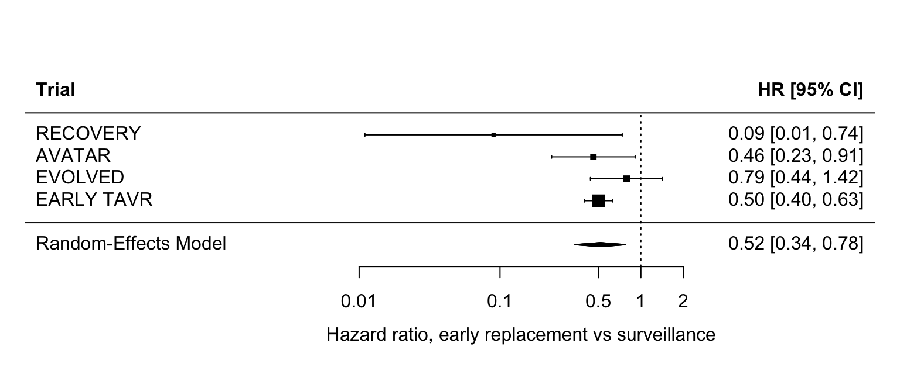
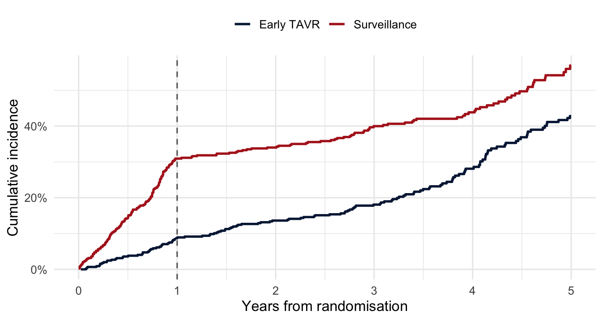
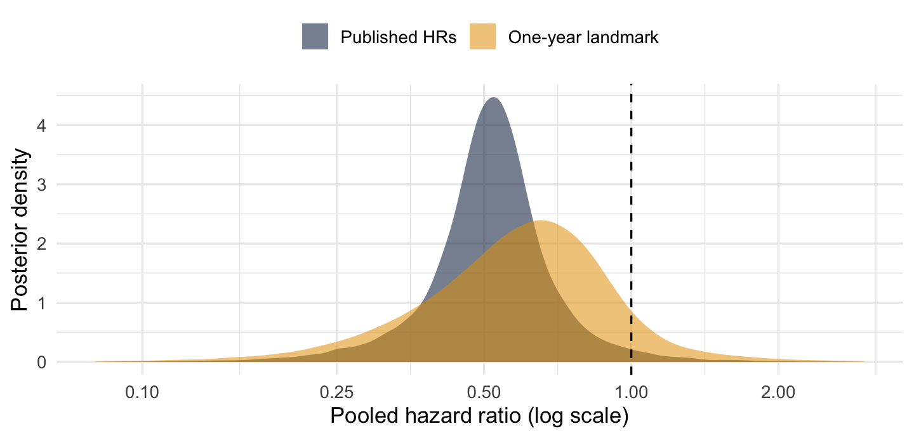

recognise a trial-specific bias that risk-of-bias tools rate as “low”, by looking for its signature in the data;
use reconstructed individual patient data and a landmark analysis to test whether a pooled effect survives removal of a biased period;
compute a normal-normal Bayesian update by hand, and fit the Bayesian random-effects model by grid approximation and with brms;
explain why frequentist and Bayesian meta-analyses of the same data agree in some settings and not in others;
read a credible interval and posterior probabilities, and explain how they differ from a confidence interval;
check the sensitivity of a Bayesian meta-analysis to the prior on the between-study standard deviation τ.
R packages:dplyr, tidyr, purrr, ggplot2, metafor, survival, knitr; brms for the code that is shown but not run.
The previous chapters supplied a toolkit: models, heterogeneity, sensitivity analyses and an honest reading of P values. This chapter applies it to two real problems. The first is a meta-analysis that passes every standard check and is probably wrong, because the trials share a bias that no checklist detects. The second compares frequentist and Bayesian analyses of the same data, which give almost the same numbers but answer different questions. Along the way the chapter introduces the first Bayesian models of the book; Chapter 13 develops them.
12.1 A bias that the checklists miss
Should patients with severe but asymptomatic aortic stenosis have their valve replaced early, surgically (SAVR) or by catheter (TAVR), rather than under clinical surveillance until symptoms appear? Four randomised trials have compared the strategies (1–4). Several meta-analyses published in 2025 pooled them, rated them at low risk of bias, and concluded that early replacement reduces a composite of death and unplanned hospitalisation, and calls to change guidelines followed. This section follows a re-analysis that asked whether that conclusion is credible (5).
Code
avr <- tibble::tribble(~study, ~treat, ~n_int, ~n_cs, ~fu_yr, ~xover12, ~hr, ~lo, ~hi,"RECOVERY", "SAVR", 73, 72, 6.2, 9, 0.09, 0.01, 0.67,"AVATAR", "SAVR", 78, 79, 5.2, 12, 0.46, 0.23, 0.90,"EVOLVED", "SAVR 75%, TAVR 25%", 113, 111, 3.5, 31, 0.79, 0.44, 1.43,"EARLY TAVR", "TAVR", 455, 446, 3.8, 208, 0.50, 0.40, 0.63) |>mutate(yi =log(hr), sei = (log(hi) -log(lo)) / (2*1.96)) # log HR and SE from the 95% CIavr |>transmute(Trial = study, `Early replacement`= treat, `n (early / surveillance)`=paste(n_int, "/", n_cs),`Median follow-up (years)`= fu_yr,`Surveillance patients replaced in year 1`=sprintf("%d (%.0f%%)", xover12, 100* xover12 / n_cs),`Published HR (95% CI)`=sprintf("%.2f (%.2f to %.2f)", hr, lo, hi)) |>kable(align ="llcccc", caption ="Four trials of early valve replacement versus surveillance in asymptomatic severe aortic stenosis.")
Four trials of early valve replacement versus surveillance in asymptomatic severe aortic stenosis.
Trial
Early replacement
n (early / surveillance)
Median follow-up (years)
Surveillance patients replaced in year 1
Published HR (95% CI)
RECOVERY
SAVR
73 / 72
6.2
9 (12%)
0.09 (0.01 to 0.67)
AVATAR
SAVR
78 / 79
5.2
12 (15%)
0.46 (0.23 to 0.90)
EVOLVED
SAVR 75%, TAVR 25%
113 / 111
3.5
31 (28%)
0.79 (0.44 to 1.43)
EARLY TAVR
TAVR
455 / 446
3.8
208 (47%)
0.50 (0.40 to 0.63)
All four trials were unblinded, and the primary outcomes included unplanned hospitalisation, an event that depends partly on the decisions of patients and physicians who know the allocation.
12.1.1 Step 1: the conventional meta-analysis
Code
m_avr <-rma(yi, sei = sei, data = avr, slab = study, method ="REML", test ="knha")
Code
forest(m_avr, atransf = exp, at =log(c(0.01, 0.1, 0.5, 1, 2)), header =c("Trial", "HR [95% CI]"),xlab ="Hazard ratio, early replacement vs surveillance")

Figure 12.1: Conventional random-effects meta-analysis of the four trials (REML, Hartung-Knapp interval).
The pooled hazard ratio is 0.52 (0.34 to 0.78): early replacement roughly halves the risk of the composite outcome. τ² is estimated as zero, so there is no statistical heterogeneity, the effects all point the same way, and the trials were rated at low risk of bias with RoB 2. Every check in Chapter 5, Chapter 9 and Chapter 10 is passed.
12.1.2 Step 2: a signature of bias
The red flag is in the crossover column of the table. A surveillance patient “crosses over” by having the valve replaced, usually after an unplanned hospitalisation, which is itself a primary-outcome event.
Code
xo <-escalc(measure ="PLO", xi = xover12, ni = n_cs, data = avr, slab = study) # logit of a proportionm_xo <-rma(yi, vi, data = xo, method ="REML", subset = study !="EARLY TAVR") # the three surgical trialsxo_surg <-predict(m_xo, transf = transf.ilogit)
In the three surgical trials about 18% (95% CI 11% to 30%) of surveillance patients had their valve replaced within a year. In EARLY TAVR it was 47%, although every patient had been confirmed asymptomatic by an exercise test at entry. Why would half of them need a valve within a year?
In an unblinded trial, four influences push in the same direction. Surveillance patients know they have severe, untreated disease and are more likely to report symptoms and seek care. Investigators know who is untreated and are more likely to attribute a symptom to the valve and admit the patient. Treated patients feel “fixed” and are less likely to consult, and their physicians less likely to blame the heart. Each increases unplanned hospitalisations in the surveillance arm relative to the treated arm: performance bias that manufactures a benefit. A less invasive procedure lowers the threshold to intervene, which fits the much higher crossover rate with TAVR. Meta-epidemiological studies confirm that unblinded trials with subjective outcomes exaggerate treatment effects (6,7).
The point is subtle. The early-replacement arm receives its valve at randomisation, as the intervention. The surveillance arm receives the same valve a few weeks or months later, often preceded by a hospitalisation that counts as an outcome. The composite outcome thus partly measures how quickly patients and clinicians chose to intervene in the control arm, which is exactly what knowledge of the allocation influences.
12.1.3 Step 3: a landmark analysis on reconstructed data
If the benefit is real, it should persist, or grow, after the first year, as untreated disease progresses. If it is produced by early crossovers, it should be confined to the first year. A landmark analysis tests this by restarting the clock at one year among patients still event-free. That needs individual patient data, which the trialists did not share; they were reconstructed from the published Kaplan-Meier curves with the algorithm of (8), which recovers event and censoring times from the digitised curves and the numbers at risk.
Code
ipd <-readRDS("data/ch12/dat_all_km.rds") |># reconstructed IPD, 1427 patientsmutate(time =if_else(study =="AVATAR", time /12, time), # AVATAR digitised in monthstrt =as.integer(group !="Clinical Surveillance"),study =recode(study, EARLY ="EARLY TAVR"))cox_hr <-function(d) { # log HR and its SE for one trial f <-coxph(Surv(time, event) ~ trt, data = d) tibble::tibble(yi =unname(coef(f)), sei =sqrt(vcov(f)[1, 1]))}yr1 <- ipd |># events in year 1 onlymutate(event =if_else(time >1, 0, event), time =pmin(time, 1)) |>filter(study !="RECOVERY") |># 2 events in year 1: no estimategroup_by(study) |>group_modify(\(d, k) cox_hr(d)) |>ungroup()lmk <- ipd |># landmark: from year 1 onwardsfilter(time >1) |>mutate(time = time -1) |>group_by(study) |>group_modify(\(d, k) cox_hr(d)) |>ungroup()
Code
km <-survfit(Surv(time, event) ~ trt, data =filter(ipd, study =="EARLY TAVR"))tibble::tibble(time = km$time, inc =1- km$surv,arm =rep(c("Surveillance", "Early TAVR"), km$strata)) |>ggplot(aes(time, inc, colour = arm)) +geom_step(linewidth =1) +geom_vline(xintercept =1, linetype ="dashed", colour ="grey40") +scale_colour_manual(values =c("Early TAVR"="#041E42", Surveillance ="#B22222"), name =NULL) +scale_y_continuous(labels = scales::percent) +labs(x ="Years from randomisation", y ="Cumulative incidence") +theme(legend.position ="top")

Figure 12.2: EARLY TAVR, reconstructed data: cumulative incidence of the primary outcome. The vertical line marks the one-year landmark.
Code
hr_txt <- \(d) sprintf("%.2f (%.2f to %.2f)", exp(d$yi), exp(d$yi -1.96* d$sei), exp(d$yi +1.96* d$sei))tibble::tibble(Trial = avr$study) |>left_join(tibble::tibble(Trial = yr1$study, `Year 1`=hr_txt(yr1)), by ="Trial") |>left_join(tibble::tibble(Trial = lmk$study, `After year 1 (landmark)`=hr_txt(lmk)), by ="Trial") |>mutate(across(everything(), \(x) tidyr::replace_na(x, "too few events"))) |>kable(align ="lcc")m_lmk <-rma(yi, sei = sei, data = lmk, method ="REML", test ="knha")
Table 12.1: Hazard ratios (95% CI), early replacement vs surveillance, from reconstructed individual patient data.
Trial
Year 1
After year 1 (landmark)
RECOVERY
too few events
0.06 (0.01 to 0.46)
AVATAR
0.46 (0.18 to 1.22)
0.54 (0.24 to 1.21)
EVOLVED
1.20 (0.52 to 2.78)
0.52 (0.27 to 1.00)
EARLY TAVR
0.24 (0.17 to 0.35)
1.03 (0.75 to 1.41)
In EARLY TAVR, which dominates the pooled estimate, the whole benefit falls in the first year (HR 0.24 (0.17 to 0.35)), exactly when the crossovers happen; after the landmark the curves run in parallel (HR 1.03 (0.75 to 1.41)). The smaller surgical trials behave differently, with estimates after year 1 that still favour early surgery but are imprecise. Pooled after the landmark, the frequentist estimate is 0.55 (0.13 to 2.26), compatible with anything from a large benefit to substantial harm. Reconstructed data are approximations: they reproduce the published curves, not the original records, and small differences from the published estimates are expected.
12.2 A first Bayesian model
Before re-analysing these data, we need the simplest Bayesian model. Bayes’ theorem says that the posterior distribution of a parameter is proportional to the likelihood of the data times the prior distribution of the parameter:
If a trial’s estimate is normally distributed around the true effect, \(\hat\theta \sim N(\theta, SE^2)\), and the prior is also normal, \(\theta \sim N(m_0, s_0^2)\), the posterior is again normal, with
The posterior mean is a precision-weighted average of the prior mean and the estimate, exactly like the inverse-variance weighting of a fixed-effect meta-analysis (Section 9.2), with the prior acting as one more “study”.
Code
update_normal <-function(m0, s0, est, se) { prec <-1/ s0^2+1/ se^2c(mean = (m0 / s0^2+ est / se^2) / prec, sd =sqrt(1/ prec))}update_normal(m0 =0, s0 =1.5, est =log(0.50), se =0.20) # vague prior: the data dominate
mean sd
-0.6810398 0.1982456
Code
update_normal(m0 =0, s0 =0.20, est =log(0.50), se =0.20) # sceptical prior as precise as the data
mean sd
-0.3465736 0.1414214
With a vague prior, N(0, 1.5²) on the log hazard ratio, the posterior mean is almost the estimate. With a sceptical prior as precise as the data, the posterior lies halfway between the null and the estimate.
12.2.1 The Bayesian random-effects model
For several studies, the Bayesian version of the random-effects model of Section 9.3 has the same two levels, plus priors:
Integrating out the study effects gives \(\hat\theta_i \sim N(\mu, SE_i^2 + \tau^2)\), so the posterior depends on just two unknowns, μ and τ. With two unknowns, the posterior can be computed directly on a grid: evaluate prior × likelihood at every combination of μ and τ, normalise, and sample combinations in proportion to their posterior probability. Each sampled (μ, τ) pair also gives a draw of the true effect in a new study, \(\theta_{\text{new}} \sim N(\mu, \tau^2)\), the Bayesian prediction.
A grid is exact up to its resolution, transparent, and fast for two parameters. It does not scale: ten parameters on a grid of 400 values each would need 40010 evaluations. General-purpose software therefore uses Markov chain Monte Carlo (MCMC). In R the most convenient interface is brms, which writes and runs a Stan model from one formula (9). The same model, with the priors used in the published re-analysis, is:
Code
library(brms)pri <-c(prior(normal(0, 1.5), class = Intercept), # mu, log HRprior(student_t(3, 0, 1), class = sd)) # tau; brms truncates sd priors at zerofit_pub <-brm(yi |se(sei) ~1+ (1| study), data = avr, prior = pri,iter =6000, warmup =1000, control =list(adapt_delta =0.99), seed =2026)fit_lmk <-update(fit_pub, newdata = lmk, seed =2026)
The formula reads: yi is observed with known standard error sei; there is an overall mean (1) and study-specific deviations ((1 | study)) with standard deviation τ. Both approaches give the same posterior, to within simulation error; here we use the grid, and Chapter 13 uses brms for a model the grid cannot handle.
ggplot(post_avr, aes(exp(mu), fill = analysis)) +geom_density(alpha =0.55, colour =NA, adjust =1.5) +geom_vline(xintercept =1, linetype ="dashed") +scale_x_log10(breaks =c(0.1, 0.25, 0.5, 1, 2), limits =c(0.08, 3)) +scale_fill_manual(values =c("#041E42", "#E69F00"), name =NULL) +labs(x ="Pooled hazard ratio (log scale)", y ="Posterior density") +theme(legend.position ="top")

Figure 12.3: Posterior distributions of the pooled hazard ratio, from the published hazard ratios and from the one-year landmark analysis.
These results reproduce the published re-analysis, which reported 0.52 (0.25 to 0.97) for the published hazard ratios and 0.59 (0.20 to 1.40) for the landmark (5). Removing the early, unblinding-prone period moves the posterior towards 1 and widens it: the probability of a reduction of at least 10% falls from 0.97 to 0.87, and the next trial could show anything from a large benefit to harm. The evidence is compatible with benefit but is not conclusive: hypothesis-generating rather than guideline-changing.
12.2.3 Why the frequentist and Bayesian results differ
Code
f_z <-rma(yi, sei = sei, data = lmk, method ="REML")f_hk <-rma(yi, sei = sei, data = lmk, method ="REML", test ="knha")pl <-filter(post_avr, analysis =="One-year landmark")fmt3 <- \(m, l, u) sprintf("%.2f (%.2f to %.2f)", exp(m), exp(l), exp(u))tibble::tibble(Analysis =c("REML, Wald interval", "REML, Hartung-Knapp interval", "Bayesian, median and 95% credible interval"),`τ`=c(sprintf("%.2f (point estimate)", sqrt(f_z$tau2)), sprintf("%.2f (point estimate)", sqrt(f_hk$tau2)),sprintf("posterior median %.2f", median(pl$tau))),`Pooled HR`=c(fmt3(f_z$b[1], f_z$ci.lb, f_z$ci.ub), fmt3(f_hk$b[1], f_hk$ci.lb, f_hk$ci.ub),fmt3(median(pl$mu), quantile(pl$mu, 0.025), quantile(pl$mu, 0.975)))) |>kable(align ="llc")
Table 12.2: Landmark analysis: frequentist and Bayesian summaries of the same four estimates.
Analysis
τ
Pooled HR
REML, Wald interval
0.58 (point estimate)
0.55 (0.27 to 1.11)
REML, Hartung-Knapp interval
0.58 (point estimate)
0.55 (0.13 to 2.26)
Bayesian, median and 95% credible interval
posterior median 0.64
0.60 (0.21 to 1.34)
With only four trials, three things drive the differences.
The width. The Wald interval plugs in \(\hat\tau\) as if known and is the narrowest. The Hartung-Knapp interval multiplies by a t quantile with 3 degrees of freedom (3.18 rather than 1.96) and is very wide. The Bayesian interval, which averages over the uncertainty in τ, lies between them.
The priors carry information. Four trials barely identify τ (the REML Q-profile 95% interval is 0.15 to 4.52). The half-t prior on τ and the N(0, 1.5²) prior on μ rule out implausibly large values. With so few trials the prior matters: a strength if it is justified, a risk if it is not.
The point estimate. The frequentist estimate weights the trials with one value of τ. The Bayesian estimate averages over all plausible values of τ, each giving different weights, and reports the posterior median, pulled slightly towards no effect by a prior centred there.
12.2.4 Lessons
Every statistical step in this case was standard. What changed the conclusion was asking whether the pattern of events made clinical sense: patients confirmed asymptomatic at entry, half of whom needed a valve within a year; crossovers that began with an outcome event; curves that ran in parallel after the first year, when a real benefit of treating a progressive disease should persist or grow; and an unblinded design. No statistical test flagged the problem.
Risk-of-bias tools are necessary, not sufficient. They cannot codify every trial-specific mechanism of bias.
Look for the signature of a suspected bias in the data: here, the crossover rate and its timing.
Heterogeneity can hide in time. A hazard ratio over the whole follow-up averaged a large early effect with no late effect.
Unavailable data can sometimes be reconstructed, from published Kaplan-Meier curves.
Correct for bias with design-based analyses (landmark or time-varying effects, objective outcomes such as all-cause mortality, restriction to blinded trials), stratification or meta-regression on the bias marker, or explicit bias modelling with an empirical prior for the bias (10), always as sensitivity analyses reported alongside the naive estimate.
Report probabilities of meaningful benefit, not just significance.
Meta-analysis is a scientific judgement supported by statistics, not a statistical procedure applied to whatever trials exist.
12.3 Do the two frameworks give the same answer?
(11) meta-analysed 12 epidemiological studies of blood lead and children’s IQ, once with a frequentist and once with a Bayesian random-effects model. The effect is the change in IQ points per unit increase in the natural logarithm of blood lead (µg/dL). Their pooled estimates were almost identical, which raises a fair question: why bother with Bayes?
One study, Desrochers-Couture 2018, is 15 to 40 times more precise than the others and reports essentially no effect; most of the rest show losses of 3 to 6 IQ points. A fixed-effect analysis would give it 97% of the weight and a pooled estimate of -0.05. How much the true effects vary, τ, is therefore the central question.
12.3.1 Frequentist and Bayesian fits
Code
m_lead <-rma(yi, sei = sei, data = lead, slab = study, method ="REML", test ="knha")pr_lead <-predict(m_lead)ci_lead <-confint(m_lead)set.seed(2026)post_lead <-bayes_nn(lead$yi, lead$sei, mu_mean =-1, mu_sd =2, # the paper's priorstau_prior = \(t) 2*dnorm(t, 0, 2), # half-normal(0, 2) on taumu_range =c(-10, 6), tau_max =10, grid =500)
Code
fmt <- \(m, l, u) sprintf("%.2f (%.2f to %.2f)", m, l, u)tibble::tibble(Quantity =c("Pooled effect μ", "τ²", "95% prediction interval, new study"),Frequentist =c(fmt(m_lead$b[1], m_lead$ci.lb, m_lead$ci.ub),fmt(m_lead$tau2, ci_lead$random["tau^2", "ci.lb"], ci_lead$random["tau^2", "ci.ub"]),sprintf("%.2f to %.2f", pr_lead$pi.lb, pr_lead$pi.ub)),Bayesian =c(fmt(median(post_lead$mu), quantile(post_lead$mu, 0.025), quantile(post_lead$mu, 0.975)),fmt(median(post_lead$tau^2), quantile(post_lead$tau^2, 0.025), quantile(post_lead$tau^2, 0.975)),sprintf("%.2f to %.2f", quantile(post_lead$new, 0.025), quantile(post_lead$new, 0.975)))) |>kable(align ="lcc")
Table 12.3: Blood lead and IQ: frequentist (REML, Hartung-Knapp) and Bayesian (posterior median, 95% credible interval) results.
Quantity
Frequentist
Bayesian
Pooled effect μ
-2.45 (-3.82 to -1.08)
-2.26 (-3.57 to -1.07)
τ²
3.32 (0.99 to 11.66)
3.26 (1.04 to 9.80)
95% prediction interval, new study
-6.68 to 1.79
-6.42 to 1.81
The numbers agree closely, and the grid reproduces the published results (frequentist −2.45, 95% CI −3.82 to −1.08; Bayesian −2.28, 95% CrI −3.54 to −1.04). That is expected: the likelihood is the same, the priors are weak, and 12 studies with I² of about 85% identify τ reasonably well. One difference in the τ² row deserves attention. The frequentist confidence interval for τ² is reported but not used: the weights, the interval for μ and the prediction interval are all computed as if τ² were known to equal \(\hat\tau^2\). In the Bayesian analysis every draw of μ comes with its own τ, so the uncertainty about heterogeneity flows into every interval.
12.3.2 Same numbers, different meaning
The frequentist 95% confidence interval is a statement about a procedure: if the whole study-and-analysis process were repeated many times, 95% of the intervals would cover the fixed, unknown μ. This particular interval either covers μ or does not, and all values inside it are treated alike. The Bayesian 95% credible interval is a statement about μ: given the model, the priors and the data, there is a 95% probability that μ lies within it. The posterior also ranks values (those near the median are much more plausible than those at the edges), and any probability a decision-maker needs can be read from it directly.
Code
tibble::tibble(Question =c("Is lead harmful at all? P(μ < 0)","Loss of more than 1 IQ point per log unit? P(μ < −1)","Loss of more than 2 IQ points? P(μ < −2)","Loss of more than 3 IQ points? P(μ < −3)","Would a new study's true effect be harmful? P(θ_new < 0)","Is heterogeneity substantial? P(τ > 1)"),`Posterior probability`=sprintf("%.2f", c(mean(post_lead$mu <0), mean(post_lead$mu <-1),mean(post_lead$mu <-2), mean(post_lead$mu <-3),mean(post_lead$new <0), mean(post_lead$tau >1)))) |>kable(align ="lc")
Table 12.4: Posterior probabilities for questions a regulator might ask.
Question
Posterior probability
Is lead harmful at all? P(μ < 0)
1.00
Loss of more than 1 IQ point per log unit? P(μ < −1)
0.98
Loss of more than 2 IQ points? P(μ < −2)
0.67
Loss of more than 3 IQ points? P(μ < −3)
0.12
Would a new study’s true effect be harmful? P(θ_new < 0)
0.88
Is heterogeneity substantial? P(τ > 1)
0.98
A regulator does not ask whether P < 0.05 but how likely an effect larger than some amount is, or what loss to plan for in a new population. Note the fifth row: although the average effect is clearly harmful, there is a 12% chance that a new study’s true effect is zero or beneficial, because the heterogeneity is large.
12.3.3 With few studies, the frameworks diverge
The lead example agrees because τ is well identified. With few studies it is not, and REML often estimates τ² = 0 even when the true heterogeneity is large (as in the heparin example of Section 9.5). Figure 12.4 simulates meta-analyses of 4, 6 and 12 studies from a population like the lead studies (μ = −2.4, τ = 1.8), and asks how often each 95% prediction interval contains the true effect in a new study.
Code
sei_pool <- lead$sei[lead$sei >0.1] # SEs of the real studies, minus the outlierone_sim <-function(k, mu =-2.4, tau =1.8) { sei <-sample(sei_pool, k, replace =TRUE) yi <-rnorm(k, mu +rnorm(k, 0, tau), sei) # observed = true + sampling error new <-rnorm(1, mu, tau) # true effect in a new study m <-tryCatch(rma(yi, sei = sei, method ="REML", test ="knha",control =list(stepadj =0.5, maxiter =500)), error = \(e) NULL)if (is.null(m)) return(NULL) pz <-predict(update(m, test ="z")); pk <-predict(m) pb <-quantile(bayes_nn(yi, sei, mu_mean =-1, mu_sd =2, tau_prior = \(t) 2*dnorm(t, 0, 2),mu_range =c(-12, 8), tau_max =8, grid =150, n_draws =4000)$new,c(0.025, 0.975)) tibble::tibble(k = k, tau_zero = m$tau2 <1e-4,`Frequentist (Wald)`= new > pz$pi.lb & new < pz$pi.ub,`Frequentist (Hartung-Knapp)`= new > pk$pi.lb & new < pk$pi.ub,Bayesian = new > pb[1] & new < pb[2])}set.seed(629)smallk <-map_dfr(rep(c(4, 6, 12), each =600), one_sim) |>summarise(.by = k, tau0 =mean(tau_zero), across(c(starts_with("Freq"), Bayesian), mean))
Figure 12.4: Coverage of 95% prediction intervals for the true effect in a new study, by number of studies (600 simulated meta-analyses at each size; true μ = −2.4, τ = 1.8).
With four studies, REML set τ² to zero in 23% of the simulated meta-analyses, although the true τ is large. The Wald prediction interval then covered the next study’s true effect only 79% of the time. The Hartung-Knapp interval repaired much of this (86%), and the Bayesian interval, which averages over the uncertainty in τ, came closest to 95% (94%). As the number of studies grows, the three converge. The Bayesian result is helped here by a prior compatible with the true τ; a badly chosen prior would hurt.
Table 12.5: Blood lead and IQ: sensitivity of the posterior to the prior on τ (the prior on μ is essentially flat, N(0, 100²)).
Prior on τ
μ, median (95% CrI)
τ, median
95% prediction, new study
Strong shrinkage, half-normal(0, 0.67)
-2.23 (-3.37 to -1.22)
1.35
-5.4 to 0.7
Half-normal(0, 1)
-2.31 (-3.60 to -1.19)
1.57
-6.0 to 1.1
Default, half-normal(0, 2)
-2.41 (-3.89 to -1.15)
1.84
-6.8 to 1.6
Weak shrinkage, half-normal(0, 6)
-2.45 (-4.04 to -1.10)
1.98
-7.2 to 2.0
With 12 studies the data dominate; only a prior that strongly shrinks τ changes μ noticeably, by pulling the imprecise studies, which report the largest losses, towards the mean. With three to five studies the prior on τ matters far more, which is exactly when it should be chosen carefully, for example from the empirical distributions of (12).
12.3.5 Why Bayes is worth the bother
Interpretation. A credible interval is a probability statement about the effect; a confidence interval is a statement about a procedure.
Decisions. The probability that an effect exceeds a threshold, expected losses and burden-of-disease simulations follow directly from the posterior.
Uncertainty in τ is propagated, not plugged in. This matters most with few studies, where frequentist \(\hat\tau\) is often zero and prediction intervals are overconfident.
Assumptions are explicit. Priors are stated, and their influence can be tested.
When the frameworks agree numerically, as here, that is expected rather than evidence that they are equivalent. The Bayesian result answers the question decision-makers actually ask.
Key points
A meta-analysis can pass every standard check and still be biased. Look for the mechanism of bias specific to the trials, and for its signature in the data.
Unblinded trials with outcomes that depend on decisions, such as unplanned hospitalisation, are vulnerable to performance bias; crossovers that begin with an outcome event are a warning sign.
Landmark analyses on reconstructed individual patient data can test whether an effect survives removal of the period most prone to bias.
A normal prior and a normal likelihood give a normal posterior whose mean is a precision-weighted average; the Bayesian random-effects model adds priors on μ and τ.
With two parameters, the posterior can be computed exactly on a grid; brms fits the same model, and more complex ones, by MCMC.
Frequentist and Bayesian results agree when τ is well identified and priors are weak; they diverge with few studies, where the Bayesian prediction interval is better calibrated if the prior is reasonable.
Report posterior probabilities of clinically meaningful effects, and check sensitivity to the prior on τ.
Exercises
Re-run the Bayesian analysis of the published AVR hazard ratios with a sceptical prior on μ, N(0, 0.35²). How much does P(HR < 0.9) change?
Fit a meta-regression of the published log hazard ratios on the year-1 crossover proportion. With four trials, what can and cannot be concluded?
Using the reconstructed data, estimate a time-varying hazard ratio for EARLY TAVR with coxph(Surv(time, event) ~ trt + tt(trt), tt = function(x, t, ...) x * log(t)). Does it support the landmark analysis?
In the lead example, omit Desrochers-Couture 2018. How do the frequentist and Bayesian estimates of μ and τ change?
Extend smallk-sim to a true τ of 0.5. Which method’s prediction intervals now have the best coverage?
Further reading
(5) for the aortic stenosis re-analysis; code and data are at github.com/brophyj/asx_as.
(8) on reconstructing individual patient data from Kaplan-Meier curves.
Loganath K, Craig NJ, Everett RJ, et al. Early intervention in patients with asymptomatic severe aortic stenosis and myocardial fibrosis: The EVOLVED randomized clinical trial. JAMA. 2025;333(3):213–21.
Guyot P, Ades AE, Ouwens MJNM, Welton NJ. Enhanced secondary analysis of survival data: Reconstructing the data from published Kaplan-Meier survival curves. BMC Medical Research Methodology [Internet]. 2012;12:9. Available from: https://pmc.ncbi.nlm.nih.gov/articles/PMC3313891/
Turner RM, Spiegelhalter DJ, Smith GCS, Thompson SG. Bias modelling in evidence synthesis. Journal of the Royal Statistical Society: Series A. 2009;172(1):21–47.
11.
Sell P et al. Quantifying uncertainty: A practical comparison of Bayesian and frequentist meta-analytic frameworks applied to lead exposure and children’s IQ. BMC Medical Research Methodology [Internet]. 2026;26:209. Available from: https://pmc.ncbi.nlm.nih.gov/articles/PMC13602614/